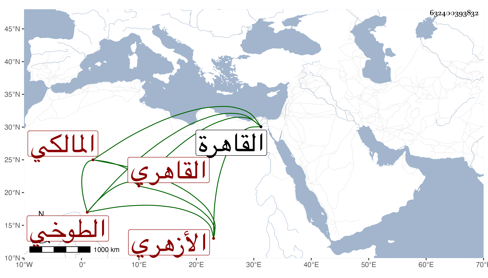

0902Sakhawi.DawLamic.ITO20230111-ara1.EIS1600.632400393832
Biography ID: 632400393832
696
أحمد بن يوسف بن عمر بن يوسف الشهاب الطوخي ثم القاهري الأزهري المالكي والد يوسف ومحمد وابن أخ عبد الحميد الآتي ولذا يقال له ابن أخي عبد الحميد وربما قيل له ابن عبد الحميد ، وكان أبوه يعرف بابن رقية . ولد في سنة سبع عشرة وثمانمائة تقريبا وقدم القاهرة وهو ابن عشر في شوال سنة سبع وعشرين مع عمه فحفظ القرآن والرسالة وعرضها على البساطي والزين عبادة وابن التنسي وشيخنا والعلم البلقيني والعيني وغيرهم ولازم الاشتغال عند الزينين عبادة وطاهر وأبي القسم النويري وغيرهم وتميز في الجملة وجلس بباب الحسام بن حريز ثم اللقاني وحج معه بل ناب عنه في القضاء ولكنه لم يتعاط حكما فيما قال وقد هش وكبر ولديه غلظة ويبس . مات في سنة ثمان وتسعين رحمه الله .
